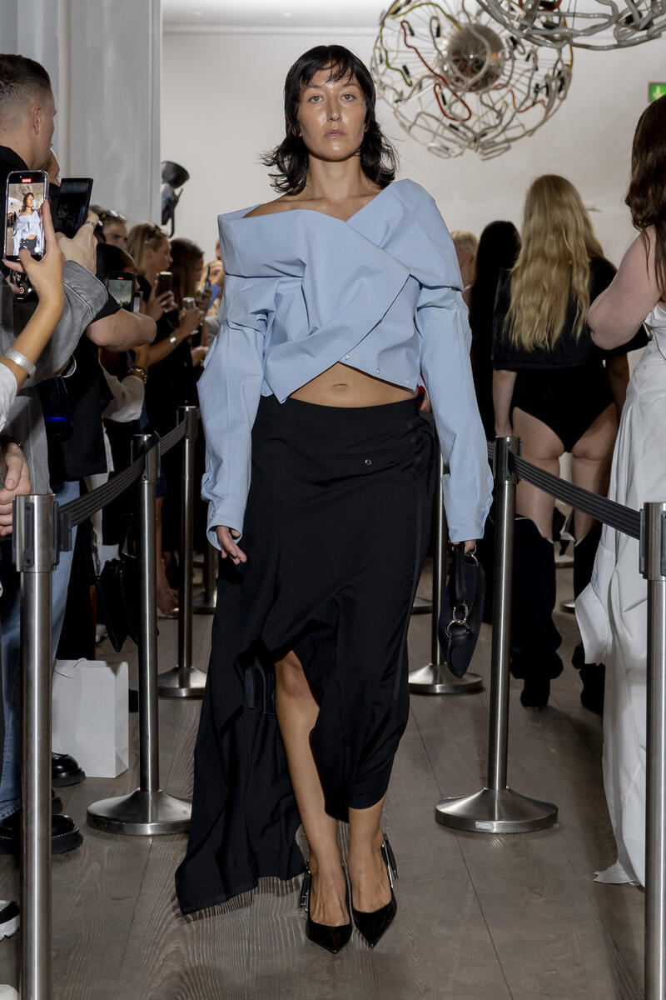
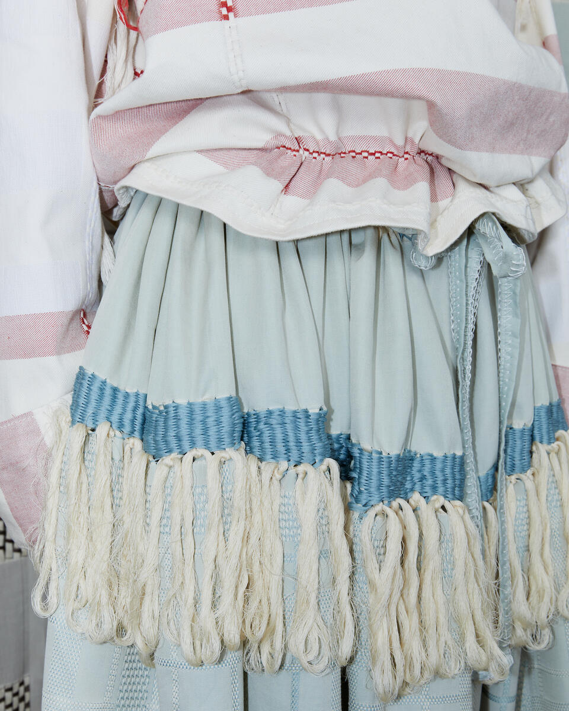
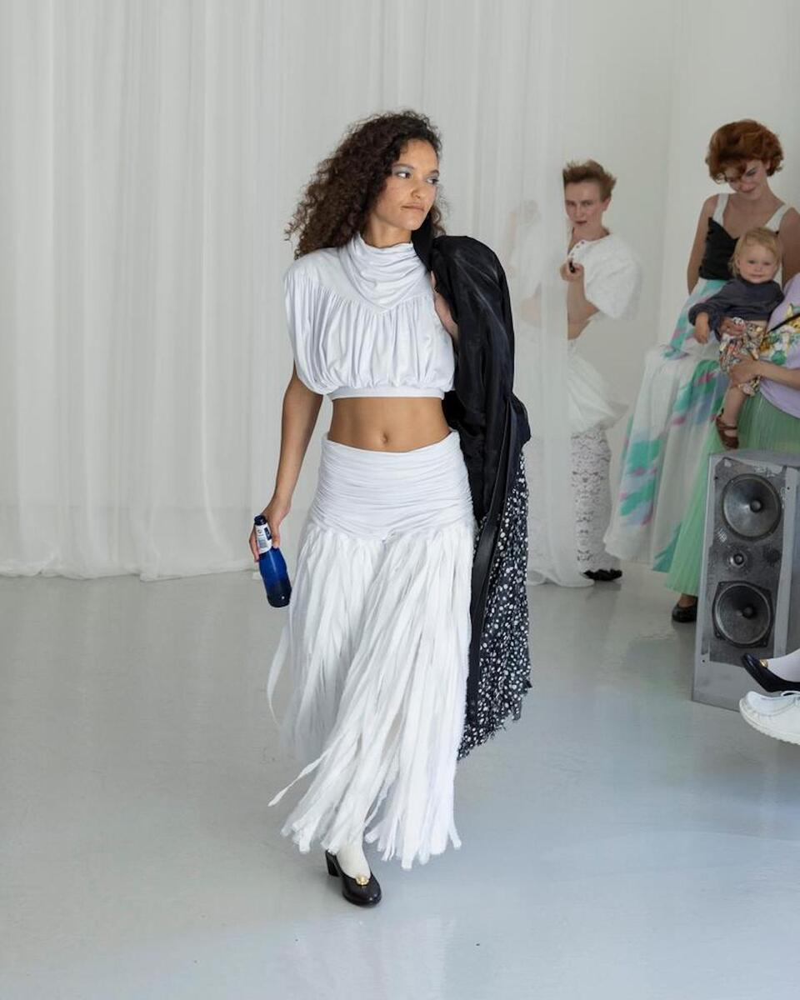

Copenhagen's fashion establishment marked two decades with understated confidence. The city's design community gathered for a 400-person dinner celebrating the twentieth anniversary of Copenhagen Fashion Week. Twenty-one shows defined the A/W 2026 season. The programming reflected a collective commitment to sustainability, radical inclusivity, and the emergence of a new generation of Nordic talent.
The season's structural foundation rested on an 18-point sustainability criteria. Participating brands committed to using at least 50 percent certified, organic, upcycled or recycled textiles. Zero-waste set design became standard practice. These requirements moved beyond marketing language. They established tangible benchmarks for an industry historically skeptical of measurable change.
The established names delivered with characteristic authority. Ganni presented collections that balanced commercial accessibility with design rigor. Cecilie Bahnsen returned with sculptural silhouettes that justified her 2017 LVMH Prize finalist status. Rotate Birger Christensen, Mfpen, and Henrik Vibskov each articulated distinct visual philosophies. These houses carried the weight of expectation. Each show reinforced their position within the Nordic design hierarchy.

Emerging designers showcased innovation and sustainability focus at Copenhagen Fashion Week A/W 2026
The emerging talent tier generated genuine excitement. Nikolas Skovgaard demonstrated precision in tailoring. Forza Collective explored collaborative potential within the Nordic region. Sson presented an entirely secondhand collection titled "The Fortunate Ones." These designers rejected the notion that sustainability required aesthetic compromise. Their work proved otherwise.
Two designers marked significant returns after extended absences. Paolina Russo showed after a two-year hiatus. Her presentation at the French Embassy featured long pleated skirts and striped jersey tops that referenced collegiate aesthetics without irony. Anne Sofie Madsen returned after an eight-year break. She founded her label in 2011, spent six years showing in Paris, and chose Copenhagen to signal a new chapter. The city welcomed both designers with evident enthusiasm.
Other presentations revealed unexpected directions within Nordic fashion. Rave Review showcased upcycled deadstock at the Swedish Embassy, paired with live music by AK Cinder. Ranra brought Icelandic tradition forward with traditional outerwear featuring fur-lined hoods. O.Files synthesized Scandinavian minimalism, Italian craftsmanship, and Japanese origami principles into coherent collections. Sunflower transformed The Library Bar in Hotel Plaza into a runway, showcasing corduroy suits in warm tobacco tones. These venues mattered. They broke the convention center circuit and created intimate presentation spaces.

Detail-focused runway presentations showcased craftsmanship across the week
66 North celebrated its centennial with deliberate restraint. The Icelandic label focused on its fisherman heritage, pairing the collection with a dinner at Michelin-starred Kadeau. The approach connected contemporary design to historical context. Such presentations avoided the spectacle that often accompanies milestone celebrations.
Model casting reflected the season's commitment to genuine diversity. Expectant mothers appeared on runways. Gestuz, Paolina Russo, and Taus featured plus-size models. Ella Emhoff walked as a notable statement about familial legacy within fashion. These choices signaled a shift toward reflecting actual bodies and actual lives. The programming departed meaningfully from the narrow physical templates that governed fashion for decades.

Established and emerging designers shared the spotlight at Copenhagen Fashion Week A/W 2026
Copenhagen's particular contribution to global fashion remains distinct. The city rejects the pretense that defines other capitals. Paris manufactures heritage narratives. Milan emphasizes commercial polish. London promotes conceptual disruption. Copenhagen pursues a quieter path. The city prioritizes sustained practice over dramatic gesture. Twenty-one shows across one week demonstrated that restraint and innovation coexist. The 400 guests at the anniversary dinner appeared to understand this fundamental point. Copenhagen Fashion Week approaches its third decade with clarity about what it represents and what it refuses to become.